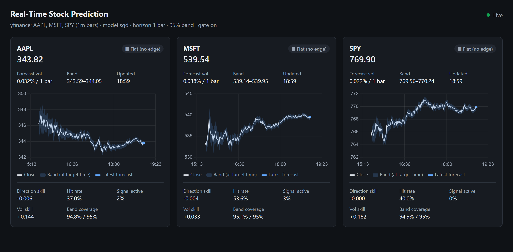

Overview—The system ingests live trades or bars, builds features incrementally, and runs two online models per symbol. One predicts the return, the other the volatility. Each forecast is scored only once its outcome arrives, and only then do the models learn from it, so every reported number is out-of-sample. On 60 days of 5-minute data for five US stocks, the volatility model beats historical volatility on every symbol, and its price bands hold their stated coverage. The return model has no edge, so a skill gate keeps it quiet unless it has recently earned trust.
IThe Problem
Most stock-prediction demos report accuracy from a backtest that quietly saw the future, or from a model tuned on the period it is tested on. At minute horizons, price direction is close to a coin flip, so a model that always answers will often be wrong while sounding certain.
This project asks two separate questions, which way and how far, and scores both against honest baselines. It forecasts direction only when there is evidence of an edge.
IIHow It Works
- StreamFinnhub trades are aggregated into bars and signed buy or sell by the tick rule. Yahoo Finance polling and a simulator are also supported.
- FeaturesComputed incrementally and scale-free: lagged returns, RSI and order-flow imbalance; realized volatility over 1, 5 and 20 bars, high–low range, and time of day.
- ModelsTwo online models learn bar by bar: an adaptive linear model for return, and a HAR-style regression on log volatility, calibrated for QLIKE loss.
- Skill gateA direction call is shown only while the model has beaten "no change" over its last 300 forecasts. Otherwise the forecast is flat.
- BandForecast ± q·volatility, with q calibrated from recent errors (conformal), so a 95% band contains about 95% of outcomes.
IIIResults
Skill is 1 − loss ÷ baseline loss, so positive means better than the baseline. Volatility is scored with QLIKE against 20-bar historical volatility, and direction with absolute error against "no change".
Table IOut-of-sample results, 60 days of 5-minute bars
| Symbol | Vol skill, 1 bar | Vol skill, 6 bars | 95% band coverage | Direction skill, raw → gated |
|---|---|---|---|---|
| AAPL | +0.57 | +0.75 | 95.1% | −0.038 → −0.002 |
| MSFT | +0.50 | +0.72 | 95.0% | −0.043 → −0.001 |
| SPY | +0.41 | +0.68 | 95.0% | −0.017 → −0.002 |
| TSLA | +0.46 | +0.74 | 94.9% | −0.022 → −0.005 |
| NVDA | +0.50 | +0.74 | 94.9% | −0.032 → −0.001 |
Band coverage and direction skill are for the 1-bar horizon. At 6 bars, coverage is 94.3–94.8%. On 1-minute bars, volatility skill is lower but still positive in most runs (+0.03 to +0.31).
Volatility is predictable
The model beats historical volatility on every symbol and horizon tested here. Most of the gain comes from intraday seasonality and overnight gaps, which a rolling window misses.
Direction is not
The raw return model loses to "no change" everywhere. The gate keeps it flat about 90% of the time, which shrinks the cost to at most 0.005.
Calibration holds
Bands are sized from the volatility forecast, then calibrated on recent errors, so the stated 95% matches what actually happens.
Negative results, reported
SPY as a cross-asset reference and a bar-based order-flow estimate did not improve direction skill, so they are opt-in or neutral.
IVLive Service
One command runs the pipeline in the background and serves forecasts as they are made.

REST and WebSocket
Endpoints for forecasts, metrics and status. Each new forecast is pushed over a WebSocket.
Resumable
Learned state is saved atomically and restored on restart. Replayed bars are skipped, so nothing is learned twice.
Real streaming
Finnhub trades become bars about a second after each interval closes. Yahoo bars arrive 3–6 s after each minute.
Tested
30 tests, including checks that the models recover a known signal from synthetic data and stay quiet when there is none.
VTechnology
Explore the code
The full source is on GitHub. No API key is needed to start: uv run stockpred serve --source sim runs the live dashboard on synthetic data.